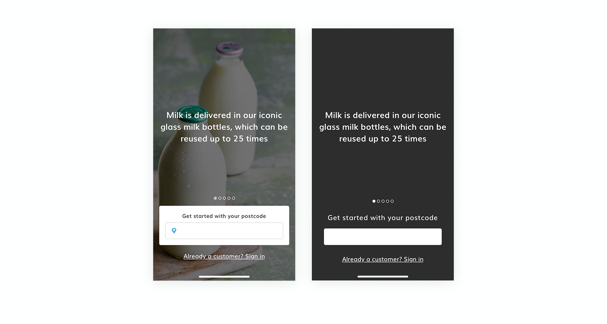
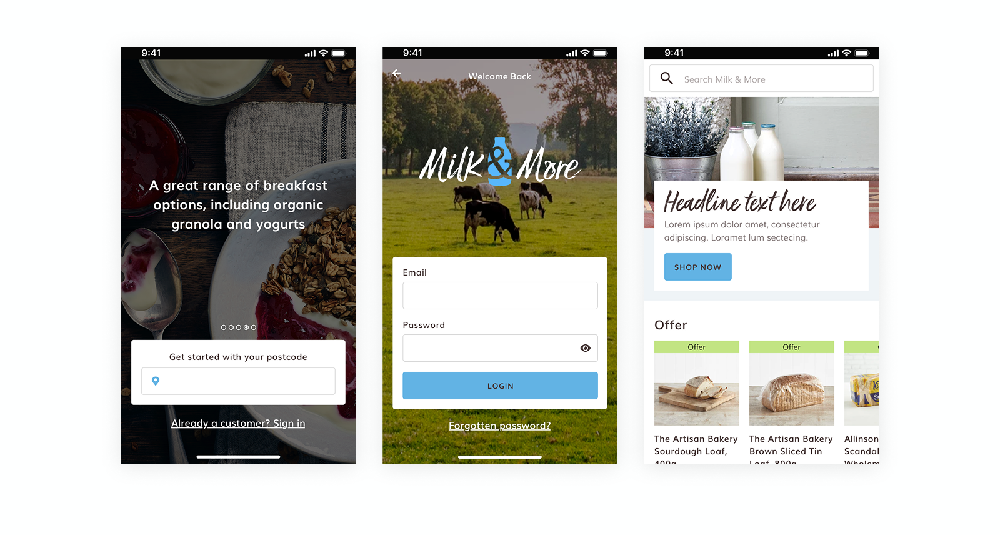
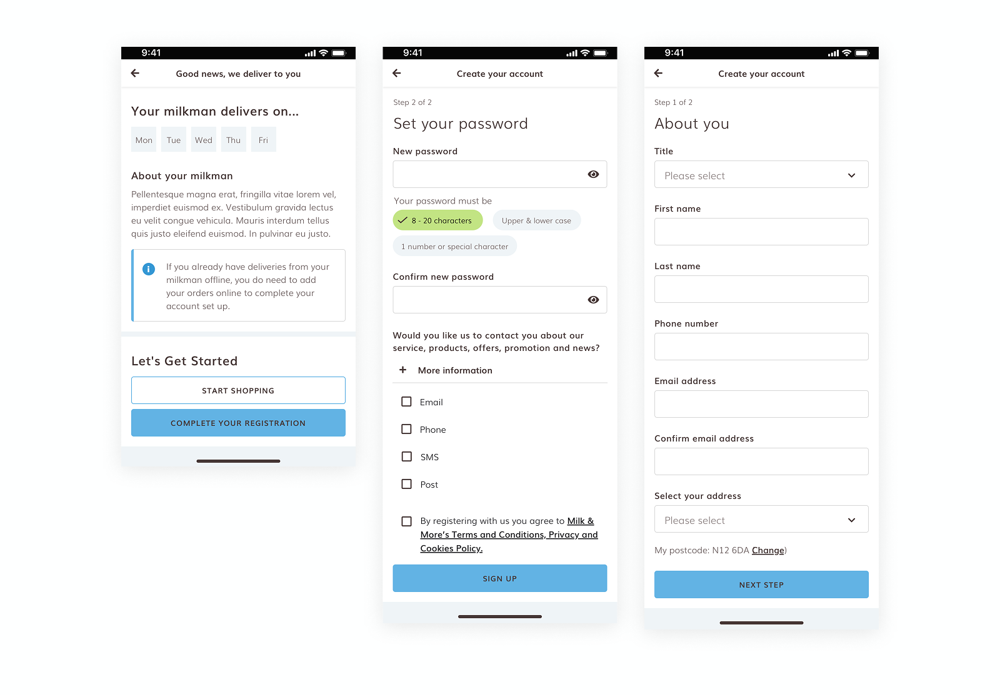

Mobile App Onboarding
Milk & More is a leading UK grocery box delivery service focused on convenience, fresh produce, and sustainable living. This project was a critical component of a broader redesign of the entire mobile application, for which I served as the sole UI/UX designer. Having already established the app’s design system and redesigned several core pages, the goal for this specific phase was to overhaul the onboarding experience to better align with user expectations and modern retail standards.
Figma, Hotjar, Google Analytics, Design System
2 months

My Role
- Designed and iterated on sketches, wireframes, and UI concepts
- Creating of a new atomic design system
- Presented design work and rationale to the client team
- User testing on prototype the design
The Problem
The primary obstacle to user retention was a mandatory login wall that blocked access to the app's core value. Users were forced to complete a lengthy, multi-step sign-up process before they could even browse the product catalog, check delivery availability in their area, or view pricing. This created significant friction, as potential customers were being asked to commit their personal data before understanding if the service met their specific needs or if delivery was even possible for their postcode.
Research & Insights
The research phase involved a deep dive into existing user personas, which highlighted a recurring confusion regarding the service's two distinct ordering methods. It became clear that the target audience—largely busy professionals and families—found the existing "Add to Basket" process far too slow. Furthermore, an over-reliance on explanatory text led to significant information overload. By auditing the current sign-up flow, I was able to map out every point of friction and redraw a corrected user flow that prioritized immediate value over data collection.
Ideation & Strategy
The strategy moved away from a gated experience toward a "browse-first" philosophy. Through a series of brainstorming sessions and workshops, I developed a hypothesis that allowing users to explore the shop and verify delivery availability upfront would significantly increase downstream conversion. I designed a series of wireframes to visualize this new path, which I then turned into a functional prototype. This allowed us to test a flow where the sign-up process was deferred until the point of checkout, making the initial entry into the app feel seamless and welcoming.

Design & Testing
During the design phase, I maintained rigorous documentation and integrated cross-team feedback to refine the UI components efficiently. I focused on reducing cognitive load by replacing dense text with intuitive iconography and native mobile patterns. By keeping the design system updated in real-time, I ensured that every iteration of the onboarding screens remained consistent with the rest of the app, allowing for a smooth handoff to the development team and a cohesive experience for the user.
To validate the new approach, we conducted a series of usability tests, including five-second tests and first-click analysis, to ensure the new "Guest Browse" feature was intuitive. The testing phase was instrumental in fine-tuning the balance between providing enough information to be helpful and keeping the interface clean. We learned that by surfacing delivery day information early in the guest journey, users felt more confident in the service, which directly addressed the frustrations identified during the initial research phase.

Outcome
Following the launch of the redesigned onboarding and ordering flow, the app’s rating on Google Play improved from 4.1 to 4.3 stars across nearly 6,000 reviews. The customer support team reported a noticeable decrease in user queries and errors related to the ordering process. This project served as a powerful reminder of how removing unnecessary barriers and listening to user frustrations can directly translate into a more successful product and a more loyal customer base.
What I Learnt
The project was a strong reminder of how listening to user frustrations directly translates into better experiences.